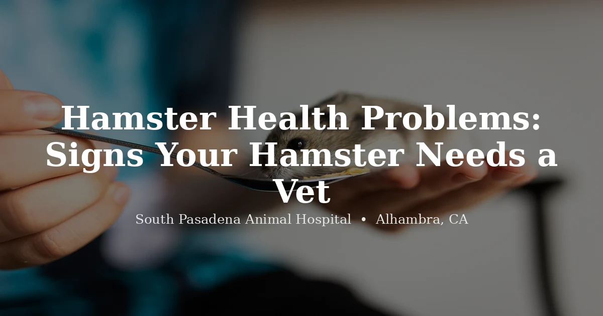

May 27, 2026 · 7 min read
Hamster Health Problems: Signs Your Hamster Needs a Vet — and What Can't Wait

Hamsters are small, fast-moving, and surprisingly easy to overlook when something's wrong. They're prey animals by nature — hiding weakness is a survival instinct — and the window between "seems a little off" and "critically ill" can close very quickly in a species this small. Body weight alone can drop 20% in 48 hours during an acute illness.
We see hamsters at our clinic, and the pattern is consistent: owners notice something wrong, wait a day or two to see if it resolves, then come in when it hasn't. Sometimes that delay is the difference between a straightforward treatment and a much harder one. For a few conditions — wet tail in particular — it can be the difference between life and death.
This guide covers the most common hamster health problems, how to recognize them early, and which ones are genuine emergencies that need same-day care.
The Most Common Hamster Health Problems
Wet Tail — The One That Cannot Wait
Wet tail (proliferative ileitis) is the hamster condition we hear about most urgently, and for good reason. It's a bacterial infection of the intestinal tract — specifically an overgrowth of Lawsonia intracellularis — that causes severe, watery diarrhea. The name comes from the telltale sign: the fur around the tail and hindquarters becomes visibly wet and matted from the diarrhea.
Wet tail is a veterinary emergency. Without treatment, hamsters typically die within 24 to 48 hours. If your hamster has a wet, soiled tail area and is lethargic or hunched, call (626) 441-1314 now — do not wait until morning.
Wet tail is most common in young hamsters (typically 3–8 weeks old) and is often triggered by stress — a new environment, transport, overcrowding, or a sudden diet change. But it can affect hamsters of any age. Treatment is antibiotics and supportive care; outcomes are much better when care starts immediately rather than after 24 hours.
One important note: not every wet rear end is wet tail. Diarrhea from a diet issue (too many watery vegetables, sudden food changes) can also cause a wet appearance. But you cannot tell the difference at home, and wet tail is dangerous enough that it warrants a vet call regardless.
Respiratory Infections
Hamsters are susceptible to upper respiratory infections, often bacterial or viral, and they show it quickly. Signs include sneezing — not occasionally but persistently — nasal discharge that's clear at first and can turn yellow or green as infection progresses, labored breathing, and a hamster that's less active than usual.
Respiratory infections in hamsters can escalate to pneumonia faster than many owners expect. A hamster that's sneezing today and seems otherwise okay can be in real respiratory distress within a few days without treatment. Cold drafts and enclosures that run too cold are common contributing factors — hamsters do best between 65–75°F.
Dental Malocclusion
Hamster teeth grow continuously throughout their lives. The upper and lower incisors need to wear against each other to stay at a functional length. When they don't align correctly — a condition called malocclusion — the teeth overgrow and eventually make it impossible for the hamster to eat normally.
Signs show up gradually: a hamster that seems interested in food but can't pick it up or chew, weight loss despite food being available, drooling, and pawing or rubbing at the mouth. Sometimes you can visibly see that the incisors are too long or crossing irregularly.
Malocclusion can't be fixed at home. The teeth need to be trimmed under appropriate veterinary restraint. It's a recurring condition in many affected hamsters, so regular monitoring is part of managing it long-term.
Cheek Pouch Problems
Hamsters use their cheek pouches constantly — they can stretch the pouches back to their shoulder blades when fully loaded. But those pouches can get into trouble in two ways.
Impaction happens when sticky or sharp-edged food gets stuck inside and can't be expelled. The hamster may repeatedly try to empty the pouch, look uncomfortable, or have one cheek that appears swollen but won't empty. Prolapse is more dramatic — the pouch inverts and protrudes outside the mouth, appearing as a pink or red mass. Both require veterinary attention. Prolapse in particular needs to be addressed quickly before the tissue dries out or becomes damaged.
Skin and Fur Problems: Mites and Ringworm
Two things cause most of the skin and fur problems we see in hamsters — and they look similar enough that they're worth distinguishing.
Mites produce hair loss, flaky or crusty skin, and obvious itching. The hamster will scratch constantly, and you may see skin that looks rough or irritated, particularly around the ears and on the back. Mites spread through bedding and contact with other animals.
Ringworm (a fungal infection, not an actual worm) causes circular patches of hair loss, often with scaling or crustiness around the edges. Ringworm is zoonotic — it can spread to humans — so if your hamster has suspicious circular bald patches, use gloves when handling and call for an appointment. A vet can differentiate between the two conditions and prescribe appropriate treatment.
Torpor — Often Mistaken for Death
This one comes up often, and it's worth understanding clearly. Hamsters can enter a state called torpor when exposed to cold temperatures — typically below 50–60°F. In torpor, a hamster appears stiff, barely breathes, feels cold to the touch, and looks for all the world like it has died.
Before concluding your hamster has died, try warming them. Cup the hamster in your hands for 10–20 minutes, allow your body heat to gradually warm them, and watch for small movements — twitching whiskers, slight changes in breathing. A torpid hamster in a warm environment will typically begin to revive slowly. A hamster that shows no response after 20–30 minutes of gentle warming warrants a vet call.
Torpor itself isn't dangerous if the hamster warms up properly. But chronic cold exposure that repeatedly pushes a hamster into torpor is a welfare problem — they're not built to hibernate the way wild hamster relatives might, and it's stressful on the body. Keep enclosure temperatures consistent and away from drafts, cold windows, and air conditioning vents.
Tumors
Hamsters, especially Syrian hamsters, develop tumors at a fairly high rate — particularly as they age past 18 months. Both benign and malignant tumors occur. They can appear anywhere on the body but are common on the flank area, in the abdomen, or in the mammary tissue.
What to look for: a lump or swelling that's new, that's growing, or that seems to be affecting how your hamster moves or eats. Not every lump is cancerous — some are benign cysts or abscesses — but distinguishing between them requires a vet examination. The location and rate of growth matter. An abscess may be treatable; a rapidly growing malignant tumor in an elderly hamster is a different conversation about quality of life.
Diabetes in Dwarf Hamsters
This one is specific to dwarf hamster species — Campbell's dwarf hamsters and Chinese hamsters in particular have a genetic predisposition to diabetes mellitus. Signs are the same as in other species: increased thirst, increased urination (you may notice the bedding is wetter than usual), and weight loss despite what appears to be a normal or increased appetite.
Dwarf hamsters with diabetes need a low-sugar diet and monitoring. Commercial hamster mixes with a lot of sweet fruit pieces or honey sticks are not appropriate for them. If you have a dwarf hamster that's drinking and urinating a lot, mention it at the next vet visit — or sooner if the weight loss is noticeable.
General Husbandry That Prevents Most Problems
Like most exotic animals, hamsters get sick most often when their environment is wrong. The basics:
- Temperature: 65–75°F, stable. Below 60°F risks torpor and respiratory illness; above 80°F risks heat stress. Keep away from cold windows, drafts, and direct AC vents.
- Bedding: At least 6 inches of paper-based bedding (aspen, paper pulp) to support burrowing. Cedar and pine shavings are respiratory irritants — avoid them. Dusty substrates aggravate breathing.
- Diet: A quality hamster pellet mix as the base, supplemented with small amounts of fresh vegetables. Avoid citrus, onion, garlic, and sugary treats — especially for dwarf hamsters. Don't offer sticky foods (gummy treats, honey sticks) that can cause cheek pouch impaction.
- Cage size: Bigger is better. A too-small enclosure is a chronic stressor, and chronic stress compromises the immune system directly. A minimum of 450 square inches of floor space is a reasonable baseline for a Syrian hamster.
- Handling and stress: New hamsters need time to settle. Rushing to handle a hamster fresh out of a new environment is a wet tail risk. Give young hamsters especially a few days to acclimate before regular handling begins.
When to Call a Vet
For a small animal like a hamster, the threshold for calling should be lower than most owners expect. Any of these warrants a vet call rather than a wait-and-see approach:
- Wet or soiled fur around the tail area — call same day
- Labored or noisy breathing, persistent sneezing with discharge
- Not eating or drinking for more than 24 hours
- Weight loss you can feel when holding the hamster (spine or hip bones prominent)
- Any visible lump, swelling, or growth that wasn't there before
- A prolapsed cheek pouch — call immediately
- Hamster not responding to warming after suspected torpor
- Abnormal posture, circling, head tilt, or loss of coordination
Hamsters have a lifespan of roughly 2–3 years. That's a short window where health problems can come on fast. Owners who know what to watch for and move quickly when something seems wrong give their hamster the best chance at a full, comfortable life.
Frequently Asked Questions About Hamster Health
What are the most common hamster health problems?
The most common issues we see are wet tail, respiratory infections, dental malocclusion, cheek pouch impaction or prolapse, skin mites or ringworm, and tumors. Wet tail is the most urgent — it can be fatal within 24 to 48 hours and needs same-day care.
How do I tell if my hamster is in torpor or actually sick?
Cup your hamster in your warm hands for 10–20 minutes. A torpid hamster will slowly start to revive — twitching, gradually moving — as they warm up. A sick hamster typically won't improve meaningfully with warmth alone, and may show other signs like a wet tail, discharge, or abnormal breathing. If there's no response after 20 minutes of gentle warming, call a vet.
What is wet tail and how serious is it?
Wet tail is a bacterial intestinal infection causing severe watery diarrhea. The fur around the tail becomes visibly wet — that's the defining sign. It's fatal within 24–48 hours without treatment. If you see it, call a vet the same day — not tomorrow.
Can hamsters catch respiratory infections?
Yes. Persistent sneezing, nasal discharge, and labored breathing are signs. Respiratory infections in hamsters can progress to pneumonia quickly. Cold environments and drafts are common contributing factors. Veterinary evaluation is needed — there's no safe home treatment.
Do hamsters have dental problems?
Frequently. Hamster incisors grow continuously, and if they don't align properly, they overgrow. Signs include difficulty eating, drooling, and weight loss. The teeth need to be trimmed by a vet — this can't be corrected at home.
Is there an exotic vet near me that sees hamsters?
South Pasadena Animal Hospital in Alhambra sees hamsters and other small exotic mammals. We're at 3116 W Main St, Alhambra, CA 91801. Call (626) 441-1314 to schedule an appointment.